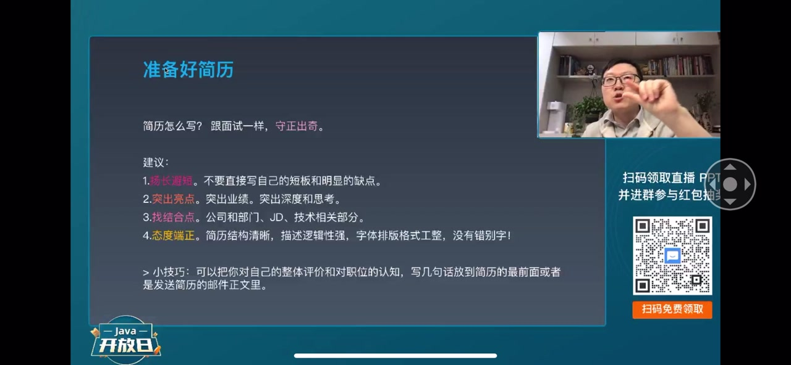
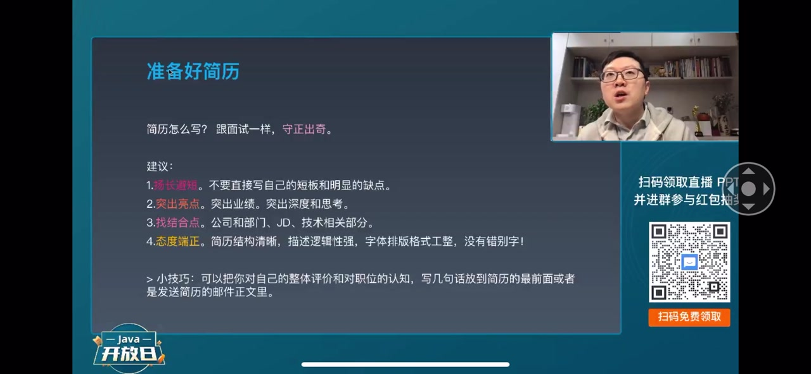
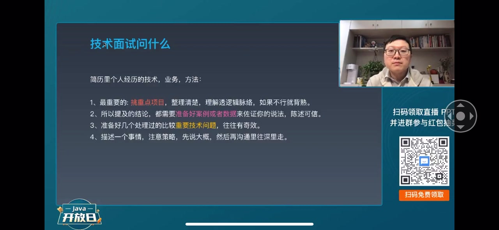
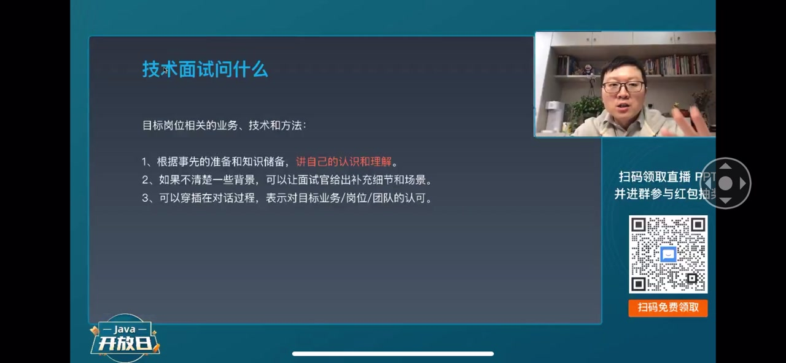
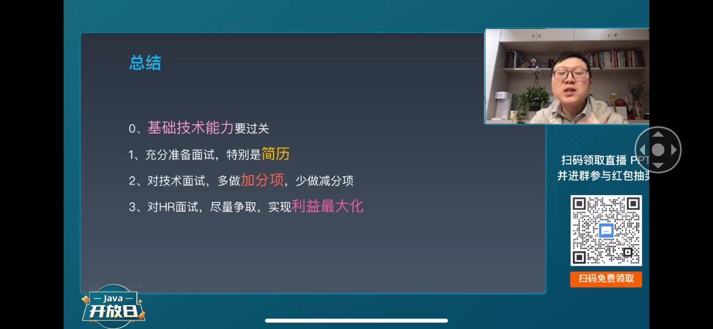

内容要点
一段 27 分钟的大厂技术面试完整攻略：从简历筛选讲到 HR 谈薪。核心目标是「扬长避短不失分、突出亮点多加分」——简历里不写缺点，自我介绍与项目经历要讲出深度思考过程（结论对错不重要，方法正确才是得分项）。技术面试部分拆解面试官的三维考察逻辑：个人价值（自我介绍与项目深挖）、岗位价值（技能匹配与目标岗位业务）、培养价值（压力测试与潜力挖掘），并给出挑两三个重点项目提前演练、结论配数据支撑、说话先整体后细节、遇到笼统问题主动反问具体化等具体打法。最后系统讲解 HR 面：HR 是服务部门、offer 只是采购意向，主动权在候选人手里——敢于表达薪资诉求，用原公司福利与期权做增量证据，在评级区间内争取最大利益。
知识结构
简历和面试中尽量不提缺点；突出业绩与深度思考过程，讲思考比结论对错更重要；经历与技术优势要找与 JD 的最大结合点。
70% 的简历格式马虎、有错别字（如 Spring、HR 拼错），会让面试官觉得你不重视自己的工作；建议把核心优势总结放简历最前面或邮件签名。
面试官要在一个小时内全面了解你，考察三个价值：个人价值（自我介绍与项目说圆）、岗位价值（技能匹配与胜任）、培养价值（发展潜力）。
挑两三个重点项目提前捋清业务、技术与架构并演练；结论要配数据案例（如性能提升 50%），否则显得像吹牛。
回答大问题先讲整体策略再逐步深入；遇到笼统问题主动反问面试官补充假设条件，把问题限定到具体场景。
压力测试时把不熟悉的问题类比到熟悉领域；不知道就承认不要瞎说。五个技巧：背熟常见内容、不与面试官冲突、个别问题答不上没关系、善用反问、尝试加微信。
HR 是服务部门，帮你争取 offer；offer 只是采购意向不是合同。主动权在你手里，敢于直接表达薪资诉求。
基础技术能力过关 + 充分准备面试（了解公司岗位、简历有针对性）+ 展示技术深度广度与利益最大化，三者缺一不可。
大厂 offer 由三件事决定：技术硬实力过关、针对目标公司充分准备、以及在 HR 阶段敢于争取自己的利益。面试从简历开始——扬长避短、突出深度思考、用数据支撑结论；遇到非常规问题用类比与反问稳住节奏；谈薪时主动提供福利与期权的增量证据，在评级区间内争取最大回报。
00:00-03:05面试四项原则：扬长避短与亮点展示
讲者开场定下整场面试的目标：我们优点的地方尽量不失分，甚至额外的加分就够，把实力展示出来，发挥得更好就是成功的面试。他给出四点中的前两点。
第一，扬长避短：很多同学特别实诚，在简历里直接写自己的很多缺点、做得不好的地方——没必要，这块尽量不要写；面试过程中也尽量不要提自己的缺点，如果被问到，可以说一下，但最好用正话反说的方式来组织。
第二，突出你的亮点：特别是你的业绩和深度思考总结的东西。所有人知道的信息，你说出来不加分不减分；但如果你能说出自己的思考过程——不管结论的对错，你把你思考分析得出结论的这个方法讲出来，方法是对的，就是一个特别大的得分项。因为如果你的思维方式、逻辑是清楚的，哪怕当前信息不够、结论是错的也没关系，下一次信息更多、思考更全面时，有正确的方法一定会得到正确的结论。这一块就是跟其他应聘者拉开区分的关键点。


03:05-04:00找结合点与态度战争：简历细节见分晓
第三，找结合点：结合你自己的经历、技术优势，跟你面试的公司部门、职位描述里的各种信息，找最大的结合的部分。这块可以让 HR 在筛选简历的时候，让你能够存活下来。
第四，态度战争：很多同学的简历格式特别马虎、结构很乱，字前面一个宋体、后面一个楷体，前面一个宋体 9 号字、后面一个楷体 18 号字，还有很多错别字，比如把 Spring、HR 都拼错。这让面试官觉得这个人特别马虎——对自己的简历都不重视，加入团队以后工作中可能也很马虎，自己的事都不重视，怎么会重视别人的事呢？
他给出一个小技巧：把自己对自己的总结、整体评价、最大的优点特点、跟其他人有区分度的一些东西，写一小段话放在简历的正前面；如果是邮件发简历，可以放在邮件签名里，让面试官一上来就对你的整体优势有一个印象。

04:00-06:05技术面试官在想什么：三维度考察
讲者转入大厂技术面试。他说大家常犯一个非常常见的错误：不管面试官问什么，都在那自说自话，说自己的，完全没有概括到面试官关注的点，也不知道面试官问这些问题到底是怎么回事——回答的逻辑线跟面试官不在一条线上，面试效果自然非常差。
那怎么 catch 到面试官问问题的这条线？可以通过面试官思考问题的角度来回答。面试官跟你一般是陌生人，需要在半个小时到一个小时内对你的整体认知、技术能力各方面做出评价和总结，所以他会短时间内全方位地压迫、压榨你的输出，充分了解你，把你的潜力、技术能力挖掘出来。
面试官很多时候拿到你的简历很晚，可能面试前几天，最晚面试前一两个小时。他了解你的第一入口就是简历，所以简历上写的东西第一很重要。他一般从三个方面判断：第一，你表达的东西和简历是否匹配；第二，你是否能胜任现在招聘的这个岗位，个人能力模型能否满足岗位要求；第三，假如很多人来面试，你的潜力到底行不行，招你之后发展潜力大不大、能不能培养到更高 level。
这三方面分别对应着每个面试者的个人价值、岗位价值，以及最终培养的价值。

06:05-10:25个人价值：自我介绍与项目深挖
对于个人价值这块，面试官最常见的套路是先让你自我介绍，介绍完让你讲项目经历——挑重点的、印象深刻的、对你成长有帮助的项目。你把这些项目的业务说圆了，就证明你之前可能不是打酱油的；如果业务讲不圆，只能说这块是别人做的、当时我也没想，面试官就会觉得你很糊涂，对自己做过的项目不认真不负责，在其中起的作用也不大。
项目过程中会穿插对具体业务、具体场景、采用技术的追问；简历里的其他技术，面试官也可能往深层次里挖。你回答用了 HashMap，面试官就会问 HashMap 的原理、为什么能用在那个场景、扩容怎么扩、并发问题怎么处理，不断挖掘你对技术本身的更深认知。
应对这个套路，他的建议是：挑两三个重点的项目，把业务捋清楚、用到各种技术与架构框架都捋出来，提前演练好；面试官聊项目时你就着重点项目讲。如果不清楚这些项目，就找之前的团队，请教团队里比较核心的人，把业务流程、核心价值点、架构、部署结构都讲清楚。

10:25-12:00结论要配数据，技术要有广度有深度
讲者强调：如果技术面试中提到一些结论——比如整个项目做完后性能提升了 50%、单个功能定制开发的时间降低了 80%——都需要准备好相应的案例，用数据来支撑论点。有数据会显得你是第一手经历的、非常靠谱；说不清楚就是主观判断，让人觉得没有说服力、在吹牛。
关于技术本身怎么在短时间内表现出积累与钻研，需要注意两点：第一，技术面要足够广，你用到这些技术领域里常见的技术都知道，不一定很深但都知道，当前领域的技术都听说过，技术面广就没有短板；第二，提前准备好几个非常重要的技术问题和解决过的技术 bug，比如调过一个线上 JVM 的参数让 GC 时间变短、Full GC 没有了，处理过一个 OOM 的异常。准备好几个这样的问题往往有奇效，能非常深地把你和其他的面试者区分开，表明你真的在一线做过这些特别重要的技术工作。

12:00-15:15说话策略：先整体后细节，反问具体化
回答面试官比较大问题的时候，要注意说话的策略。好多搞开发的同学很难说清楚一个事情：面试官一问，他上来就把所有事情说到细节里了——一方面说的不是重点，另一方面你对细节的了解跟面试官可能是不同的，你给细节下的结论有可能是错的。
所以一方面可以整体说一下大概的策略，再在跟面试官深入交流的过程中逐渐深入。特别是很多时候面试官问的问题很笼统，怎么回答都可能觉得是个坑，这时候因为面试是一对一，你可以通过不断反问面试官的方式，让他提供更多的信息、更多的假设条件，从而把问题从笼统慢慢具体化、细化限定到一个具体的场景里，这时候再针对这个场景回答，既详细又精确，还能显示你处理问题的逻辑、这个人很有条理、很好沟通。
第二个重要的点是目标岗位相关的业务技术：提前有准备就可以很好应对，把准备好的知识讲一讲，除了能收集到的信息，重要的是讲自己的认知和理解、发散一下。如果不清楚，也可以让面试官给一些提示——如果面试官觉得重要就继续深入讲，不重要就不用讲那么多。特别是如果对目标岗位有很深的理解，可以穿插讲对团队技术表示认可、觉得这些技术很好很适合、团队氛围不错愿意加入——这些都可以给面试官加分。整体思想是尽量做加分项，不做减分项。

15:15-18:55潜力测试与五个实战技巧
对于潜力这一块，面试官可能给出压力测试、特别有挑战的问题，看你超出当前回答能力之外的应对情况。一方面可以引导话题，把不熟悉的问题对应到熟悉的问题上——很多技术的底层原理都是相通的，比如多线程、分布式里的很多限定安全、事务、甚至 MQ，背后的原理都是一样的；面试官问你一个不熟悉的东西，你按知识体系里找一个类似的东西进行类比，拉到熟悉的这部分来讲，面试官如果懂，在他看来基本上就是一样的。
实在不知道的东西切记不要瞎说一通，如果实在说不出来就说你不知道——瞎说一通面试官一般都能听得出来，这是一个非常重要的减分项。如果面试官觉得问题不重要 OK 没问题，他会跳过，你心里也不要有负担；如果很重要，反过来可以按刚才的技巧让面试官给一些线索引导继续走，这块是靠潜力的，跟面试官做良好的沟通互动也是潜力的一部分——如果面试官是你未来的 leader，你愿意跟他做深入沟通，说明你这个人不怂、不自以为是、不想到什么就是什么，这都是加分项。
讲者总结出五个技巧：第一，常用的东西——个人介绍、兴趣爱好、特长、优缺点，以及重点项目和解决过的问题的技术点，都可以背下来、列好，做有意识的练习准备熟，这样去说的时候不会紧张说不出来。第二，永远不要跟面试官做重点的冲突，冲突一定会让你至少减 50 分——哪怕一个技术细节你没做过但面试官没做过你是对的，一旦陷入争论就会很麻烦，可能因为这个问题失去机会。第三，个别问题没回答上来也没关系，一次面试你们来回沟通交流几十个问题，面试官不会因为其中个别问题没答好而认为你整个人不行，就像做题做到第 9 题卡住可以先做后面的，心态稳定不要影响后面的发挥。第四，有效利用面试官最后一个问题「你有什么想问我的」：可以问面试中的不足、没答上来的问题、岗位需要的技术，甚至反问直接领导「如果我有幸通过拿到 offer，入职以后你对我这个岗位的具体期望、我需要在哪方面加强」——如果他非常认真仔细地回答，基本上这次面试就成功了；没认真回答也没关系，因为面试还有运气成分、面试官当时的心情。第五，如果可能可以尝试跟面试官加一次微信。

18:55-23:55HR 面试：offer 谈判主动权在你手里
如果简历筛选、技术面试都通过了，就进入 HR 面试。讲者先讲 HR 面试到底在干什么：大部分公司 HR 其实不强势，它就是一个服务部门。经过前面两三轮技术面试，用人部门基本认可你了——认可你的能力、基础素质满足岗位要求，这时候 HR 的作用就是帮用人部门把你争取到，跟你谈定最后的 offer。
好多同学担心不会聊 offer、不敢要薪水、聊不到满意的结果。讲者说完全没有必要，因为这个阶段主动权其实在你自己手里——前面的阶段主动权在公司。就像一个销售过程：前面的阶段你说服了老板、说服了公司管理层认可你这个人，最后 HR 聊的这个过程就是老板指令采购部门把你买回去，主动权在你自己手里。
HR 一般看两方面：一方面参考你前面的各种评价，再看你的沟通潜力、职业稳定性，从 HR 角度做附加评价——这些一般都不重要；最重要的其实就是跟你确定最终的 offer 包括薪水福利。HR 的目标是沟通完了以后给你发一个采购合同的要约，本质是用最小的成本帮公司获得候选人的 offer 意向。offer 给了你之后你可以去也可以不去——offer 只是一个采购意向，不是最终的合同，签了劳动合同入职那才是最终的成交。所以 HR 不管怎么跟你聊，最终目的都是让一个双方可以接受的程度获取你的 offer 意向。
好多同学不敢提要求，讲者说没必要，你怎么想就怎么说：现在的工资多少，是想平薪还是要加 50%，直接表达就行，因为现在主动权在你手里；如果对方给不到，你们可以相互进一步沟通、调整价码。很多时候甚至大部分 70%、80% 的时候，你想要一个 30% 涨幅的薪水，在对方给你评级的范围内都是可以有办法帮你争取到的——哪怕现在的薪资跟那个有差距。HR 一般情况下也愿意帮你争取：争取到了你感激他，二方面你加薪以后稳定性会比较大，短期内不会因为别人多给一点薪水就走。

23:55-27:29薪资证据与总结：三件事决定大厂 offer
讲者给出一个谈薪的好方法：HR 如果直接给你加薪水，他会被别的部门或他的领导挑战，所以你要给 HR 提供足够多的证明你值这个薪水的证据。把你之前公司不加班、有调休、福利特别好、有各种额外休假、期权、大奖包、补充医疗等好的福利条件都列出来，在原有薪资的基础上做一个增量提供给 HR 作为证据，HR 就可以去帮你争取更好的薪水——毕竟公司又不是 HR 开的，一个月多给你 3000 还是 5000 对 HR 本身没有特别大的差距，关键是需要给 HR 提供合理的证据证明你值这么多钱。同时要注意对方给的评级：评级在对方公司的职级体系里面能覆盖到你目前要的薪水，你要的薪水如果是 P7、P8 那肯定怎么聊都不行了，只要在这个区间内我们都是可以争取的。
最后总结去大厂的三件事：第一，基础技术能力一定要过关，这块不过关没有任何办法——技术能力过关跟综合实力到达 P7 技术专家水平是有区别的，希望我们把整个知识体系搭建起来，常用的方法技巧都学会，养成长期学习不断进步的好习惯，应付面试那几个小时就够了。第二，充分准备面试，提前了解目标公司、岗位、团队，准备好简历，简历要有针对性、不要太乱、不要有错别字、没有条理，简历最大的目标就是能在筛选过程中存活下去走到下一轮。第三，技术面试要充分发挥我们的技术能力，把对业务系统的了解、用过的技术、解决的重要技术问题的深度和广度都展现出来，多做加分项，少做减分项，不要主动聊不懂的东西或瞎扯不知道的东西。
最后，如果前面都通过了，面对 HR 尽量争取自己的利益最大化：谈自己的要求是公开的事情，没有任何觉得不好意思的东西。只有争取了自己的利益最大化、让自己满意了，才能在公司里保持一个好的心态长时间工作下去。讲者作为 leader 补充：如果面试一个同学入职后告诉我当时谈的薪水要少了，我心里也会咯噔一下——你对自己的利益都不太敢于争取，那么在工作中跟别的团队、跟业务方有了直接冲突的时候，你怎么能够管理好冲突、替整个团队争取利益呢？

完整转录（780段）
以下文本由 Whisper medium 模型自动转录，可能存在少量识别误差，已尽可能修正。
不说我们优点的地方尽量不失分
甚至额外的有些加分就够了
我们把我们的实力展示出来
如果能发挥的更好
有些加分项
我们这次面试就是非常成功的
这四点呢 第一个是扬长避转
我发现很多同学特别实诚
在简历里面直接写了自己的很多缺点
写了自己做的不好
没必要
这块呢
尽量不要写
包括在面试过程中也尽量不要提自己的缺点
如果被问到了干嘛的
可以说一下
最好也是一种正化反出的方式来说
第二个呢是透出我们的亮点
特别是透出你的业绩和你深度思考的总结的一些东西
一个信息
所有人都知道
你把它说出来
这东西对你来说不加分不减分
人与人与的东西
但是如果你能说出来自己的一些思考
不管结论的对错
你说出你思考的这个过程
你自己的思考和分析得到一个结论的
这个方法是对的
那么你就有一个特别大的得分项
因为呢
如果你的思维方式你的逻辑是清楚的是对的
那么哪怕你现在输入
各种条件你找到的信息不够
你得到的结论是错的也没关系
下一次
当你找到信息更多的时候思考更全面的时候
你有正确的方法你一定会得到正确的结论
这一块呢其实就是我们跟
其他的很多的人
有一个比较大的区分
跟其他的应聘者有一个比较大的区分
一个很重要的点
第三呢找结合点
就是结合你自己的经历
你自己的技术优势
找跟你面试的公司部门
和那职位描述里的各种信息
找最大的结合的部分
这块呢
就可以让比如HR刷减力的时候
让你能够
存活下来
第四个呢态度战争
这个东西很多东西都不正式
我发现有70%的简历
格式都特别马虎
结构也很乱
字呢前面一个宋体
后面一个凯提
前面一个宋提9号字
后面一个凯提18号字
还有很多错别字
Spring
HRBnit全都拼错了
这时候就让我觉得
我作为面试官的话就会让我觉得
这个人特别马虎
对自己的简历都不重视
那么你加入团队以后
你工作中我觉得你可能也很马虎
也不重视吧
自己的事都不重视
你怎么会重视别人的事呢
所以这块也需要注意
有个小技巧就是大家可以把
你对自己的总结
整体的评价最大的优点特点
就是跟其他人有区分度的一些东西
写一小段话
放在你简历的正前面
如果是你邮件发简历的方式
你可以放在邮件的指纹里
这样的话
让面试官一上来就对你整体的
优势有一个整体的印象
聊完了这一块
接下来我们看一下
我们怎么来搞定大省的技术面试
大省的技术面试
我发现大家
经常会犯一个非常
常见的错误
不管面试官问什么
都在那自说自话
说自己的
完全没有概括到面试官
关注的点
也不知道面试官问的这些问题
到底怎么回事
这样的话
你的面试的时候回答问题的
逻辑的线跟面试官都不在线上
你自然的面试的效果就会非常差
那我们怎么来get到
面试官问的问题的这条线呢
我总结了一下
我们可以通过面试官
他思考问题的角度
来回答这个问题
面试官跟你一般情况下是个陌生人
你俩以前从来没见过
也将不了解没有任何的共同的交集
跟一个陌生人
跟一个陌生人
进行沟通
还需要在短时间
半个小时到一个小时内
对你的整体认知技术能力
各方面做出评价和总结来
所以面试官就需要在
短时间内
通过各种方面
全方位的压迫
压仗
你的这种输出
充分的去了解你
把你的潜力把你的技术能力挖掘出来
面试官
很多时候
拿到你的简历是很晚
可能面试前的几天
最晚的可能面试前的一两小时
拿到你简历的时候
第一开始
能了解你的东西就是简历
所以你简历上写的东西
第一很重要
包括简历里面你提到的技术
你提到的各种业务方法
业务系统
面试官要判断你的综合的能力
你表达的各种东西
和你简历的各种东西
一方面他们是不是匹配
另一方面他们是不是
能够让你能够胜任
现在需要招聘的这个岗位
来了以后
这岗位要求的东西
你个人的能力模型是不是能够满足它
让你能干活
第三个
假如很多人来面试
面试官很可能还需要知道
你的潜力到底行不行
招你和其他人是不是
效果一样
招你以后
发展潜力特别大
可以把你培养到更高的level
成为更高级的专家
所以这三方面分别其实就对应着
我们每一个面试者
你的个人价值
你的岗位的价值
包括你个人最终培养的价值
对于你的个人价值这一块
一般面试官
面试过程中最开始
我们常见的套路就是
让你先自我介绍
介绍完以后让你讲你的项目经历
就让你的项目经历就可以
让你聊你的做过这些
重点的项目影响深刻的项目
对你成长的同学帮助的项目
你把这些项目的业务什么的说圆了
说圆了就证明你之前
可能不是打酱油的
如果你对你做的项目你说不清楚
业务你讲不圆
那你就可能只能说这块是别人做的
这块当时我也没想
一方面面试官就会觉得
你这个人很糊涂
另一方面你对你
自己当时做的这个项目
不认真不负责
你在其中起的作用也不大
项目的过程中就会穿插到
对项目的很多具体的业务
具体的场景
我们采用的一些技术
就你简历里其他的技术
面试官可能在就你的技术
也进一步的进行挖掘
往深层次里挖
你回答了一个问题
你用了HashMap
面试官问你HashMap的原理
为什么能使用这个场景
扩容这么扩的
并发问题怎么处理
等等就可以不断地去
挖掘你对技术本身的
更深度的这种认知
这是一个常见的套路
在这个套路里
我们一般怎么样可以更好地
应对让我们在面试过程中
达到最佳的效果
我的建议就是
你可以挑两三个重点的项目
两三个重点的项目
把它捋清楚
业务捋清楚说源
用到各种技术
架构的框架
把它都捋出来
提前地演练好
然后面试官跟你聊
项目的时候
你就就着你的重点项目去给他讲
如果你不清楚
你不清楚这些项目
那你就需要
找你之前的团队
请教这些团队里
比较核心的一些人
通过跟他们的交流
向他们请教
把这个项目整体的
业务流程
核心的一些价值点
架构
我们部署的这种结构
在这些项目的下都讲清楚
如果我们在
我们技术面试过程中
提到一些结论
比如说整个项目做完以后
我们的性能提升了50%
对于单人功能
定制开发的时间
降低了80%
当你说出这样一些
结论的时候
你都需要准备好
相应的案例
用你的数据来支撑你这个论点
当你数据的时候
那么就会显得
你说这个东西你是第一手经历的
非常靠谱
当你说不清楚
你就是一个主观的判断
这东西让人一方面觉得没有说服力
二方面你一直在说大话
在吹牛
特别是技术这块
怎么在短时间内
半小时一小时内
你自己的技术这块
有积累有钻研
你自己在模业方面的技术表现得很深
这方面
其实我们需要注意两点
第一我们的技术面要足够的广
很多你用到这些技术领域里
常见的技术你都知道
不一定很深但你都知道
目前前领域的这些技术
你都听说过
你的技术面很广就没有短板
第二
你也可以提前准备好
几个非常重要的技术问题
你解决过的几个重要的技术bug
你调过一个线上的
比如说GWM的参数
使整个GWM的性能
GCA的时间变短
FORGCA没有了
就是这样的东西
处理一个OLM的异常
准备好几个这样的问题
往往有奇效
能够非常深的
把你跟其他的面试者
做一个区分
表明你真的在一线
做过这些
特别重要的技术工作
最后我们需要
讲具体的
面试官问的一个
比较大的问题的时候
我们需要注意的事情是
注意我们说话的策略
好多搞开发的同学
很难说清楚一个事情
面试官一问
他一上来就把所有的事情
说到细节里了
意味着
你说的一方面不是重点
另一方面
你对这个细节的了解
跟面试官这个细节的了解
可能是不同的
你说的细节的结论
有可能是错的
所以我们一方面
可以整体的说一下大概的策略
在跟面试官深入交流的过程中
逐渐的深入
特别是很多时候面试官问的问题
如果我们说到这个图像的笼统
那我们怎么回答都可能觉得是个坑
这时候
面试过程中
是私下的一对一
你就可以通过不断的对面试官
进行反问的方式
让他提供更多的信息
更多的假设条件
从而把这个问题从图像
慢慢的具体化
细化限定到一个具体的场景里
这时候你继续去这个场景
你的回答既详细又精确
这些问题会显示你
在整个处理问题的逻辑
你这个人是很有条理的
逻辑清楚 很好沟通
第二个重要的面试
问的问题的点
其实就是目标岗位相关的业务技术
如果我们提前有准备
我们就可以很好地应对这个问题
把我们准备好的这些知识
讲一讲
讲我们自己的认知和理解
除了能收集到的信息以外
重要的是讲一讲我们自己的认知和理解
发散一下
这一块如果不清楚
也可以让面试官给一些提示
如果面试官觉得重要
那么我们就可以
继续地深入地往下讲
如果我们讲不出来
或者面试官觉得不重要
我们就不用讲那么多
特别是如果我们提前
对目标的工作岗位
有一个特别深的理解的话
其实在这个过程中
我们就可以穿插着讲一些
我们对这个团队
用到的一些技术
表示很认可
觉得这些技术很好
很适合
对这个团队他们现在氛围
我们觉得非常不错愿意加入这个团队
这块也可以给面试官加分
我们整体思想尽量地做加分体
不做减分体
最后
对于我们潜力的这一块
面试官有可能
给我们一些压力测试
给我们一些特别有挑战的问题
因为面试官在挖掘我们
到底潜力在哪里
到底对一些
超出自己现在
回答能力之外的这些问题
我们的应对情况怎么样
所以这时候一方面我们可以引导话题
把各种不熟悉的这些问题
对应到我们熟悉的问题上
就是很多的技术
特别是如果大家上了我这个
上了我这个宣言以后
大家会发现很多的技术的底层
背后的原理都是相通的
比如说我们的多线程
跟我们的分布室里的很多的东西
限定安全
跟我们的事务
甚至跟我们的MQ相关的一些东西
背后的原理大家都是一样的
这样的话如果面试官问你一个
不熟悉的东西
你呢可以按照你的知识体系里
找一个跟他类似的东西进行类比
这样的话就可以拉到你
熟悉的这一部分
讲你熟悉的东西
其实在面试官如果他都知道的话
在他看来其实基本上就是一样的
那你这一问基本上就可以过关了
实在不知道的东西大家切记
不要瞎说一通
如果我们不知道
实在也说不出来
就说你不知道就好了
如果瞎说一通
面试官一般都能听得出来
这是一个非常重要的减肥项
如果面试官知道问题
不重要OK没问题
面试官直接就可能跳过了
所以这时候你自己心里也不要有负担
如果这个问题很重要
反过来你也可以按照我们刚才说的技巧
让面试官
给我们一些线索
引导我们继续往下走
毕竟这块是靠我们潜力的
跟面试官
做一个良好的沟通互动
这块也是潜力的一部分
如果面试官是你未来的
加入团队的leader
那么你如果跟他
有一个良好的互动
也就意味着你这个人不怂
也不自以为是
不管想到什么就是什么
愿意跟领导做深入的沟通
这都是加分项
所以我们总结下来的一些技巧就是
这么五个
第一个就是
常用的很多东西
比如说你个人的介绍
兴趣爱好
特长啊
优缺点啊这些东西
其实你都可以把它背下来
甚至
重点的项目和重点的
你解决过的一些问题的技术点
你都可以把它列好
先
做一些这种
有意识的练习
基本上把他们给准备熟了
这块非常的有用
就让你再去说的时候
不会导致紧张说不出来
第二
永远不要跟面试官做重点的冲突
冲突这个问题
一定会让你
至少减50分
很多时候你跟面试官
争论一个技术细节
面试官没做过但是你做过
所以说你是对的
但是你跟面试官一旦
在争论里面去了
这个事情就会变得很麻烦
导致你因为这个问题
最后失去了这个机会
第三个当个别的问题你没回答上来
也没有关系
你需要意识到一个问题
一次面试过程中你们俩至少
对吧
来回沟通交流了几十个问题
那么面试官不会因为
其中的个别问题
你没有回答上来或者回答得不太好
而认为你整个人不行
这就跟我们刚好做题的时候一样
如果我们做题做到中间的
比如说20号题做到第9号题的时候卡住了
没关系先做后面的题就行了
先抛弃了这个问题
先把它放在一边
心态稳定不要影响你后面的发挥
第四个是
有效的利用面试官
一般情况下最后一个问题
你有什么想问我的
前面的技术面试这块
前面的技术面试这块呢
你可以问一些你面试中的不足
你面试上没回答上来一些问题
问一些这个岗位需要用到的一些技术相关的问题都可以
甚至利用这个机会
更好的去了解目标的公司和岗位
如果是中面
或者可能你的直接领导来面试你
其实这块呢
你有一个反过来给他挖坑的机会
你可以一般问他一下
如果我有幸通过了咱们的面试拿到offer
那么我入职以后
到岗位上来了以后
你对我这个岗位
我个人工作的具体期望
我自己需要在哪方面进行加强之类的
这块你怎么看
如果呢
他非常认真地仔细地回答了你这个问题
基本上你这次面试就成功了
如果他没有特别认真的回答也没有关系
因为面试除了技术水平
沟通能力
还要看当时的运气
面试官当时的心情是不是好
面试官这块是不是特别忙
他对你是不是有耐心
都有关系
面试除了前面我们说的各种东西
还有随机的那一部分
最后一个呢
如果可能可以尝试跟面试官加一次微信
如果可能可以尝试跟面试官加一次微信
如果可能可以尝试跟面试官加一次微信
假如说我们有幸
假如说我们有幸
在前面筛选简历的这个过程
我们通过了
技术面试这块也过了
那么呢接下来我们就进入HR面试
那么呢接下来我们就进入HR面试
怎么去应对HR面试呢
同样的我们来考虑一下
HR面试到底在干什么
主要大部分的公司
HR其实不强势
它就是一个服务部门
经过前面的面试
经过前面的两到三轮技术面试以后
经过前面的两到三轮技术面试以后
用人单位
用人这个团队这个部门
基本上认可你了
认可你的能力、基础的素质
满足了这个岗位的要求
这时候呢HR的作用就是
帮用人部门把你争取到
帮用人部门把你争取到
跟你谈定最后的offer
所以呢这个阶段
其实大家一点都不担心
好多同学跟我说
这个阶段自己特别担心
担心自己不太会聊offer
担心自己不太会聊offer
不敢要薪水
聊不到一个满意的这样的结果
我跟他说你完全没有必要
因为这个阶段主动权其实在你自己手里
前面的阶段主动权在公司
就像一个销售过程一样
前面的阶段
你说服了老板
你说服了公司的管理层
认可了你这个产品就是你个人
最后的HR
聊的这个过程其实就是
公司老板指令咱们的
采购部门把你买回去
把这个产品买回去
所以这时候主动权其实在你自己手里
HR一般看两方面
一方面就是参考你前面的各种评价
再看一下你的什么
沟通潜力
职业稳定性
从HR的角度去看问题
做一些附加的评价这块其实一般都不重要
最重要的其实就是
跟你确定你最终的offer包括薪水福利
这些东西
HR的目标呢
就是跟你你沟通完了以后
给你
发一个这样的采购的合同
要约
这个合同要约的本质就是
用最小的成本
帮公司呢
去获得候选人的offer意向
这个offer给了你以后
你可以去也可以不去好多人也担心
拿了offer以后我不去怎么办
这跟HR没关系offer只是一个采购意向
它不是一个最终的合同
签劳动合同以后入职签合同
那才是最终的成交
所以呢
HR不管怎么跟你聊
其实最终的目的就是
要让一个双方可以接受的程度
获取你的offer意向
这一块呢
好多同学就跟我说
他自己不敢提要求
我说没有必要
你怎么想就怎么说
你现在的工资多少
你是想平清要
还是想在现在的基础上
加个50%
直接表达就行了
因为现在主动权在你手里
如果对方给不到OK
你们可以相互再进一步的沟通
可以再去调你的价码
其实很多时候
甚至大部分70% 80%的时候
你想要你
有一个涨薪
比如30%的涨幅度这种薪水
在对方
给你评级的这个范围内
哪怕你现在的薪资
比那个是有差距的
都是可以有办法帮你争取到的
HR呢一般情况下也愿意帮你争取
争取到了一方面你感激他
二方面呢你加薪以后
你的稳定性会比较大
短期内不会因为别人多给你一点薪水
你就走了
其实对大家身份都有利的
但是很多时候
HR如果直接给你加薪水
他就会被别的部门
或者他的领导挑战
所以呢这块告诉大家一个好的方法
你给HR提供足够多的
证明你值这个薪水的这种证据
你可以把你之前公司
比如说不加班
有调休
福利特别好
有各种额外的休假
提供各种呢
期权
各种呢大奖拥包
这样子有好的福利啊
条件啊甚至包括一些补充医疗啊
把这些东西都列出来
把这些东西呢在你原有的薪资的基础上
做一个增量提供给HR作为证据
HR就可以去帮你争取更好的薪水
因为毕竟啊公司又不是HR开的
一个月多给你3000还是多给你5000
对HR来说
本身没有特别大的
没有特别大的差距
所以你可能会被人家说
本身没有特别大的没有特别大的区别
关键是我们需要给HR
提供合理的
这样的一个证据
证明你值这么多钱
同时呢
同时呢我们需要注意
对方给我们的评级
评级在
对方的公司的职举体系里面
甚至能hold住覆盖到
目前我们要的薪水
你要的薪水啊现在给你个P7
P7、P8了那肯定怎么聊都不行了
只要在这个区间内
我们都是可以争取的
最后呢
我们总结一下
我们想去大厂
拿到大厂offer通过大厂的技术面试
第一方面啊我们的基础技术能力
一定要过关这块不过关
没有任何的办法
这块的技术能力
过关呢跟我们的综合实力
到达P7的水平技术专家
教授的水平呢是有区别的
希望我们把整个知识体系
搭建起来
常用的各种方法技巧都学会了
同时能够养成一个
长期学习不断进步的
这样一个好习惯其实就够
你去面试应付那几个小时了
第二个呢
充分准备面试
特别是要提前了解
我们目标的公司
岗位成队
还有就是准备好我们的简历
简历要有钻对训
简历不要太乱了不要各种出别字
没有条理
简历这块最大的
最大的一个目标
就是一定要在
简历筛选的过程中我们的简历
能够存活下去走到下一轮
第二点呢就是
我们的技术面试这块
要充分的把我们的技术能力展示出来
把我们对以前做过的业务系统
业务的了解
我们用过这些技术
对技术的了解
我们解决了一些重要的技术问题
技术的深度技术的广度都展现出来
多做加分项
少做那些减分项的东西
主动去聊自己技术上不懂的东西
或者瞎胡扯一些自己不知道的东西
最后呢
如果我们前面都面试通过了
面对HR
尽量去争取自己的利益最大化
谈自己的要求
这是一个公开的事情
没有任何你觉得不好意思的东西
都可以先把它放一边
只有你争取了自己的利益的最大化
让自己满意了
你才能在公司里不要长时间的
保持一个好的心态
工作下去
其实我做一个leader
假如我知道你的话
如果面试一个同学入职以后告诉我
当时谈的薪水要少了
我就会
心里也会歌顿一下
你对自己的利益都不是太敢于争取
那么在工作中
当跟别的团队跟业务方
有了很多
这样的直接的冲突的时候
你怎么能够去管理好冲突
怎么能够去替整个团队
来争取利益
好了今天呢
我们的整体的内容就分享完了
最后呢希望大家
一方面
能够通过
自己的这种
自己的学习也好
加入我的家训练营
跟我一块
跟很多同学一块来学习也好
大家在短期内花几个月
通过冲刺
把自己的知识体系补上来
拉齐了
有信心有能力去应对
一线大厂的技术面试
搞定大厂
的offer
实现自己人生的
这样的一个职业发展的
层次的
一个突破
去更好的公司
做更好的事情
更好的发展自己拿到更好的薪水
好谢谢大家
今天的分享就到这里
今天下午给大家做了一下午的
模拟面试啊
好的导播可以切出去了